1. The experiment
Two lists of numbers go into a model
When you give a model a sentence, it doesn't receive text. It receives two lists of numbers:
| The | cat | sat | on | the | mat | because | it | was | |
| token ID | 785 | 8251 | 7578 | 389 | 279 | 5517 | 1576 | 432 | 572 |
| position ID | 0 | 1 | 2 | 3 | 4 | 5 | 6 | 7 | 8 |
- Token IDs come from the tokenizer. They say which token each one is (these are Qwen's real IDs).
- Position IDs don't come from the text at all. The code that runs the model simply counts. In the transformers library it's one line, identical in Qwen's and GPT-2's code:
position_ids = torch.arange(number_of_tokens) + past_seen_tokensarange counts 0, 1, 2… The + past_seen_tokens matters while the model writes its answer: each new token gets the next number after everything already processed. These position IDs are the only way the model knows which token came first.
Where each model uses the position ID
| GPT-2 (learned table) | Qwen (RoPE) |
|---|---|
| input = token_table[token ID] + position_table[position ID] Used once, before the first layer. |
input = token_table[token ID], nothing added. The position ID travels to every attention layer and becomes 32 angles, one per pair (position × that pair's speed), that rotate the query and key. |
This is the "token embedding + positional embedding" step you may know. It's how GPT-2 works. RoPE models skip the addition and use the position ID inside attention instead (chapters 6 and 8 explain both).
The test: pass your own position IDs
Normally the library makes the position IDs for you. But position_ids is an official input to the model, so you can pass your own. This is the real code from my run:
ids = tok("The cat sat on the mat because it was",
return_tensors="pt").input_ids # 9 token IDs
n = ids.shape[1]
def run(pos0):
pos = torch.arange(pos0, pos0 + n).unsqueeze(0) # pos0, pos0+1, ...
return model(ids, position_ids=pos).logits[0, -1]
ref = run(0) # positions 0 ... 8 (what the library does by default)
far = run(20000) # positions 20,000 ... 20,008, same token IDs
print((far - ref).abs().max()) # biggest difference in any outputSo the second run is the exact same 9 tokens, same words, same order, with only the position IDs changed:
| The | cat | sat | on | the | mat | because | it | was |
| 20,000 | 20,001 | 20,002 | 20,003 | 20,004 | 20,005 | 20,006 | 20,007 | 20,008 |
Nothing is added in front of the sentence. For GPT-2 I used the same code with positions 500 to 508, because its table stops at 1,023.
Qwen2.5-0.5B (RoPE)
| positions 0–8 | |
|---|---|
| too | 6.47% |
| cold | 6.33% |
| a | 4.43% |
| positions 20,000–20,008 | |
|---|---|
| too | 6.47% |
| cold | 6.33% |
| a | 4.43% |
GPT-2 (learned table)
| positions 0–8 | |
|---|---|
| so | 9.67% |
| too | 5.46% |
| a | 3.76% |
| positions 500–508 | |
|---|---|
| the | 15.37% |
| am | 11.98% |
| in | 10.10% |
Qwen gave the identical answer: its biggest difference in any output number was 0.00064, which is just rounding. GPT-2's answer changed. The short reason: RoPE only looks at the gaps between position IDs, and "cat" (20,001) to "sat" (20,002) is still a gap of 1, just like 1 to 2. GPT-2 looks up each position ID in its table, so new IDs mean different numbers added to every word.
- It uses a documented input. The transformers docs describe
position_idsas "Indices of positions of each input sequence tokens in the position embeddings." Leave it out and the library counts from 0. Pass it and your numbers are used. - Researchers shift position IDs on purpose. PoSE (Zhu et al., 2023) trains on 2K-token texts while skipping their position IDs ahead in chunks, and extended LLaMA to 128K tokens that way. Randomized Positional Encodings (Ruoss et al., 2023, Google DeepMind) gives short sequences position IDs drawn from a much larger range.
- It checks a stated property. RoFormer shows the query-key score depends only on the gap m − n. Shifting every position by the same amount keeps every gap, so the output shouldn't change, and it doesn't. GPT-2's positions 500 to 508 are inside its trained table, so it's fed positions it knows, and its answer still changes.
2. Arrows and scores
Inside a model, every token is a long list of numbers. You can't draw 896 numbers, but you can draw 2. Two numbers are a point on a grid: go 3 along, 2 up. A line from the centre to that point is an arrow. An arrow has a length and a direction.
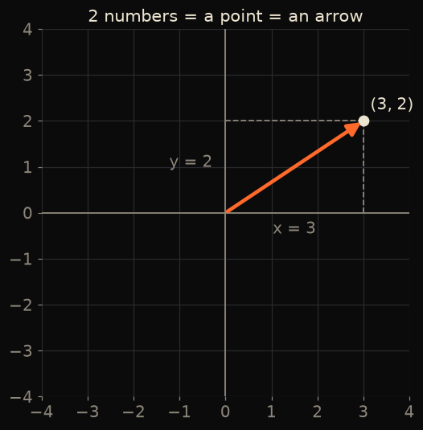
The dot product is the one operation you need. Multiply the two x numbers, multiply the two y numbers, add them up. That's all.
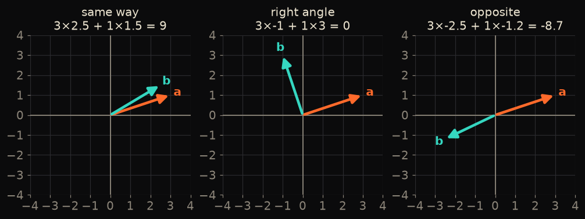
The same recipe on three pairs of arrows: big when they point the same way, 0 at a right angle, negative when opposite.
Why does it behave like that? Because the dot product is secretly length × length × an "angle factor". That factor is called the cosine of the angle. You don't need to know how to compute it, only its shape:
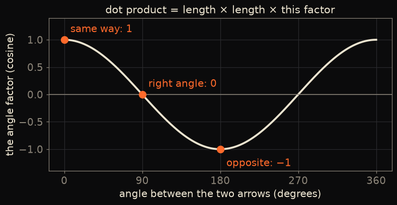
The formulas, with the diagram's numbers
For an arrow a = (x, y), its length is |a| = √(x² + y²) (Pythagoras: the arrow is the long side of a right triangle).
The dot product can be computed two ways, and they always give the same number:
a · b = a_x × b_x + a_y × b_y (multiply and add)
a · b = |a| × |b| × cos(angle) (lengths and angle)| case | multiply and add | |a| | |b| | angle | cos | |a|×|b|×cos |
|---|---|---|---|---|---|---|
| same way | 3×2.5 + 1×1.5 = 9 | 3.16 | 2.92 | 12.5° | 0.976 | 9.00 |
| right angle | 3×(-1) + 1×3 = 0 | 3.16 | 3.16 | 90.0° | 0.000 | 0.00 |
| opposite | 3×(-2.5) + 1×(-1.2) = -8.7 | 3.16 | 2.77 | 172.8° | -0.992 | -8.70 |
Same three arrow pairs as the diagram above. The last column always equals the multiply-and-add result.
3. Attention is blind to order
When the model reads sat, attention decides which earlier tokens matter. Each token makes a query arrow (what it's looking for) and a key arrow (what it offers). The score between sat and cat is the dot product of sat's query and cat's key. In Qwen these arrows have 64 numbers per head, not 2, but the rule is the same: multiply number by number, add up.
The query and key are made from the token's own numbers. So unless we add something, nothing in the score says where a word is. Dog bites man and man bites dog are the same three words in a bag.
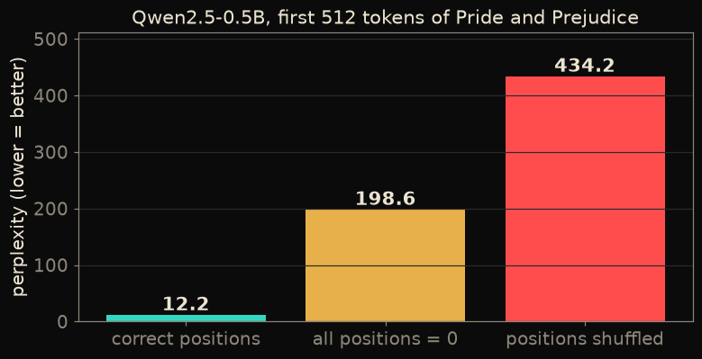
Perplexity = how surprised the model is by each next word (lower is better). Same 512 tokens, same model; only the position numbers changed.
4. Why not just add the number?
The simplest idea: write the position into the token. Token 1 gets +1, token 500 gets +500. The problem is size. Here are real numbers for the token " cat" in Qwen:
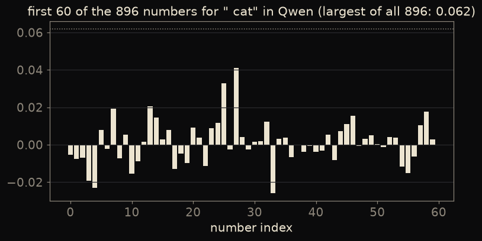
The average size of those numbers is 0.011. Adding 500 would bury the meaning completely. Dividing by the text length (so positions run 0 to 1) breaks something else: one step would mean a different amount in a short text and a long one.
So we want a position signal that stays small, doesn't repeat too early, and still tells neighbours apart.
5. 2017: sine waves
The original Transformer paper (Vaswani et al., 2017) used waves. A sine wave swings between +1 and −1 forever, so it never grows. Cosine is the same wave, a quarter-lap ahead. The easiest way to see both: a point running round a circle. Its height is the sine, its sideways position the cosine.
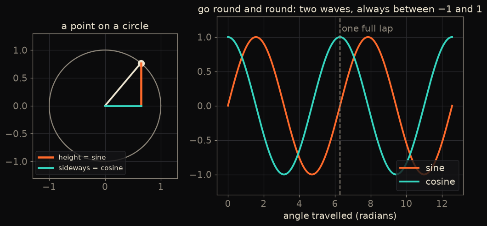
For every position, the paper takes a point that moves a fixed step round a circle per token and writes down its 2 numbers (sine and cosine). One circle isn't enough: a fast one returns to the same spot too soon, and two far-apart positions would look the same. So it uses many circles, each slower than the last, like the second, minute and hour hands of a clock.
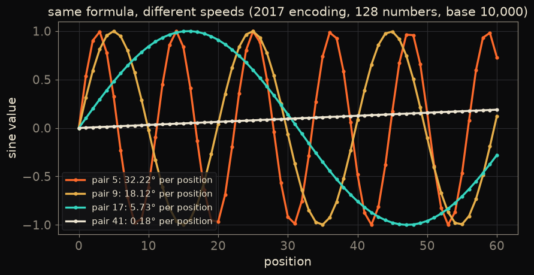
The speeds come from one number, the base: 10,000. Pair i moves 1 ÷ 10,000^(2i/d) radians per position. (A radian is about 57.3°; a full lap is 6.28 radians.) The fastest pair moves 1 radian per token, a lap every 6.3 tokens; the slowest of 512 numbers needs over 60,000 tokens per lap.
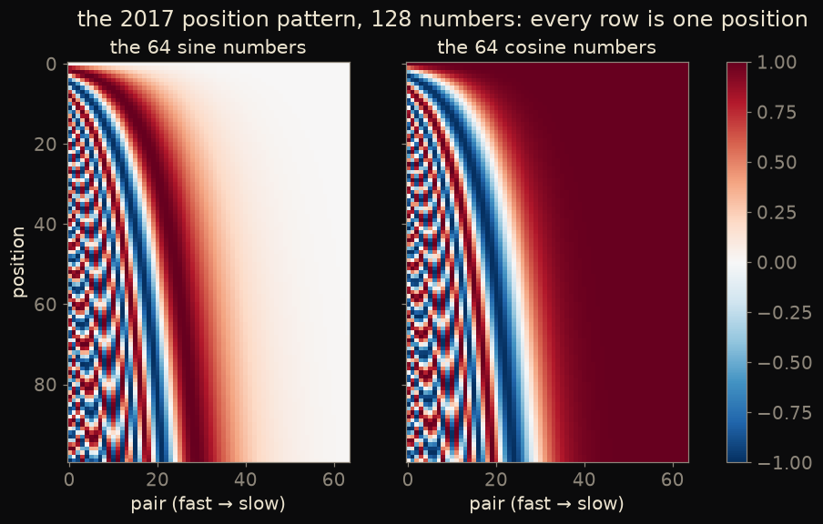
The full pattern for 128 numbers (64 sine, 64 cosine) and 100 positions. Each row (position) is different from every other. In each panel, the left side is fast pairs (changing quickly down the rows) and the right side slow pairs (barely changing).
This pattern is added to each token's numbers before the first layer.
6. Learned tables
The 2017 paper also tried letting the model learn one vector per position, and reported "nearly identical results". GPT-2 went that way. Here is its real table:
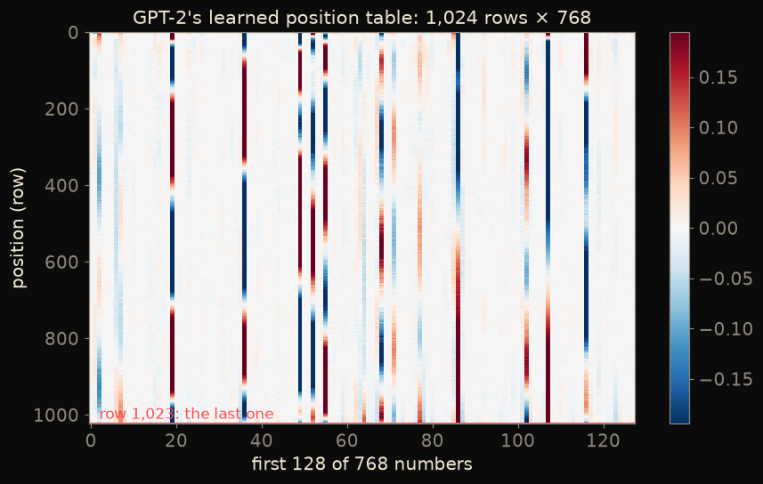
The position ID from chapter 1 picks a row of this table, and that row is added to the token's numbers, once, before the first layer. There are exactly 1,024 rows. Asking for position 1,024 isn't "a bit worse"; the lookup fails: IndexError: index out of range in self.
Problem 1: adding mixes meaning with address
After adding, every token is word + position. The score between two tokens becomes (word₁ + pos₁)·(word₂ + pos₂), which splits into 4 parts:
| word₁ · word₂ | meaning vs meaning |
| pos₁ · pos₂ | address vs address |
| word₁ · pos₂ | mixed |
| pos₁ · word₂ | mixed |
(The real formula has learned matrices in between, but the split is the same.) The RoFormer paper cites work (Ke et al., 2020) that found little real relationship between words and absolute positions in the mixed parts: the model spends capacity untangling them.
Problem 2: absolute, not relative
"The cat sat" means the same at word 37 or word 9,000. What usually matters is the distance between words. An absolute method changes every address when you shift the text, which is exactly why GPT-2's answer changed in chapter 1.
7. Measuring the gap
From 2018, people encoded distance directly, inside attention:
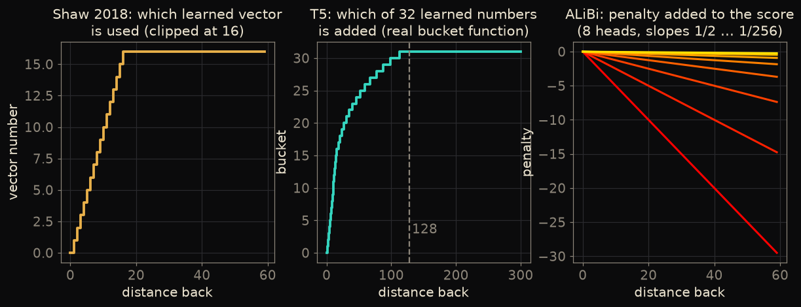
- Shaw et al., 2018 (Google): a learned vector for each distance (1 back, 2 back…), added into attention. In their experiments distances beyond 16 all shared one vector.
- T5 (2019): each distance gets a single learned number added straight to the attention score. Small distances have their own number; larger ones share buckets that widen, and past 128 tokens all distances share one. 32 numbers per head, shared across layers.
- ALiBi (Press et al., 2021): nothing learned. Explained below.
ALiBi, step by step
The recipe, from the ALiBi paper (section 3), in every layer and every head:
- Score as usual: query of the word looking (position i) · key of the word looked at (position j). No position has been added anywhere: not to the embeddings, not to the query or key.
- Subtract a penalty: score − slope × distance, where distance = i − j, how many tokens back.
- Softmax turns the scores into attention weights, as normal.
The slope is a fixed number per head, set before training and never learned (the authors tried learning it; it didn't extrapolate as well). With 8 heads: head 1 gets 1/2, head 2 gets 1/4, then 1/8 … down to 1/256.
Worked example: "was" (position 8) looking back at "cat" (position 1), distance 7. Softmax works with escore, so subtracting a penalty p multiplies that word's weight by e−p (before softmax rescales everything to add up to 100%):
| head | slope | penalty (slope × 7) | weight kept |
|---|---|---|---|
| 1 | 1/2 | 3.5 | 3% |
| 2 | 1/4 | 1.75 | 17% |
| 3 | 1/8 | 0.875 | 42% |
| 4 | 1/16 | 0.438 | 65% |
| 5 | 1/32 | 0.219 | 80% |
| 6 | 1/64 | 0.109 | 90% |
| 7 | 1/128 | 0.0547 | 95% |
| 8 | 1/256 | 0.0273 | 97% |
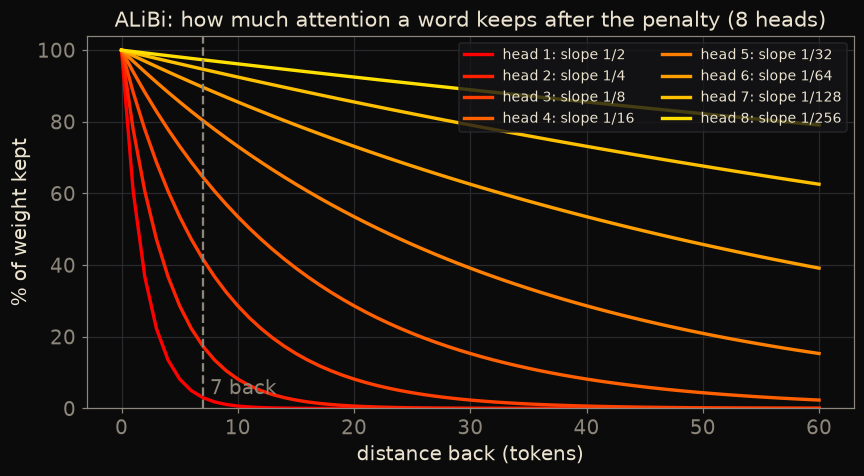
The same rule for every distance: each line is one head. Steep heads (head 1) can barely see beyond a few tokens; gentle heads (head 8) barely notice distance. The dashed line is the worked example.
So ALiBi builds in a range of short-sighted and far-sighted heads without learning anything. And a distance of 3,000 just gets a bigger penalty by the same straight-line rule, so there's nothing "unseen" at longer lengths. That's why it handles texts longer than training well. The difference from RoPE: ALiBi's distance effect is a fixed curve per head, the same whatever the words are; RoPE's comes through the angle between query and key, which the model shapes through what it learns.
All three add an extra term to the attention scores, on top of the plain dot product. RoPE goes a different way: it changes the arrows and leaves the dot product alone.
8. Rotation
Rotating an arrow means turning it round the centre, like a clock hand. Its direction changes; its length never does (it stays on the dotted circle).
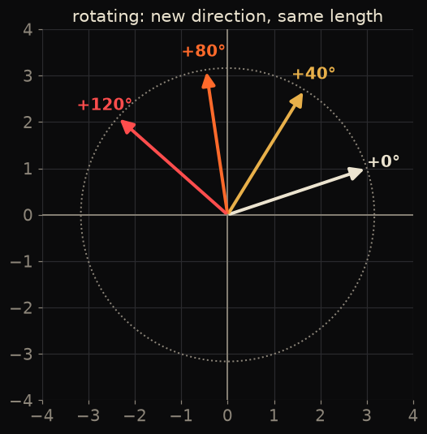
On the 2 numbers (x, y), turning by an angle a is just:
new x = x·cos(a) − y·sin(a)
new y = x·sin(a) + y·cos(a)
That's all the "rotation matrix" in the RoFormer paper is: this recipe, written as a table of cos and sin.
The same thing as a matrix multiplication
Write the recipe as a 2 × 2 grid of numbers (a rotation matrix) and multiply it by the pair:
[ new x ] [ cos(a) −sin(a) ] [ x ] [ x·cos(a) − y·sin(a) ]
[ new y ] = [ sin(a) cos(a) ] [ y ] = [ x·sin(a) + y·cos(a) ]Matrix multiplication just means: each row of the grid times the column (x, y), number by number, added up. Row 1 gives the new x, row 2 the new y, which is exactly the recipe above.
Worked on the real numbers: pair 7 of sat's query (Qwen, layer 0, head 5) is (x, y) = (0.180, -10.879). This pair turns 4.30° per position, and sat is at position 2, so a = 2 × 4.30° = 8.59°: cos(a) = 0.9888, sin(a) = 0.1494.
[ 0.9888 -0.1494 ] [ 0.180 ]
[ 0.1494 0.9888 ] × [ -10.879 ]
row 1: 0.180×0.9888 − (-10.879)×0.1494
= 1.803 (new x)
row 2: 0.180×0.1494 + (-10.879)×0.9888
= -10.730 (new y)I checked this against Qwen's own code: it produces the same two numbers.
All 64 numbers at once
A head has 32 pairs, each with its own angle. Put the 32 little 2 × 2 grids into one big 64 × 64 matrix, with zeros everywhere else, and one multiplication turns the whole query:
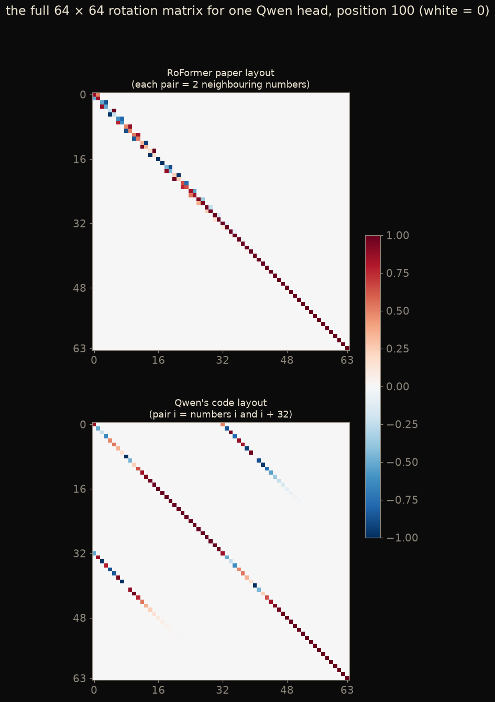
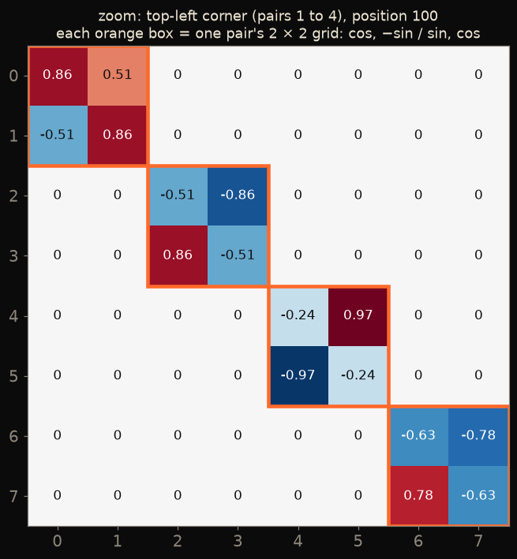
Real speeds of a Qwen head at position 100. Zoom: each orange box is one pair's own 2 × 2 rotation grid; everything outside the boxes is 0. Top: the paper's layout, where the 2 × 2 blocks sit along the diagonal. Bottom: Qwen's code pairs number i with number i + 32, so the same blocks are spread out (the cos values on the diagonal, the sin values on two side lines). Same rotation, numbers stored in a different order. Fast pairs (top-left) have cos and sin swinging between −1 and 1; slow pairs (bottom-right) are almost exactly cos = 1, sin = 0: barely turned. Multiplying sat's query by the bottom matrix gives exactly what Qwen computes (checked).
Almost every number in that matrix is 0, so real code never builds it. RoFormer itself points out that multiplying by the full matrix is wasteful and gives a cheaper way to compute the same thing. Qwen's code (transformers library) is these lines:
def rotate_half(x):
x1 = x[..., : x.shape[-1] // 2] # first 32 numbers
x2 = x[..., x.shape[-1] // 2 :] # last 32 numbers
return torch.cat((-x2, x1), dim=-1)
q_embed = (q * cos) + (rotate_half(q) * sin)
k_embed = (k * cos) + (rotate_half(k) * sin)For pair i, the first line gives new x = x·cos − y·sin and new y = y·cos + x·sin: the same two rows of the 2 × 2 matrix, done for all 32 pairs at once with no zeros multiplied.
First: what is a "pair"?
A query or key is not 2 numbers. In Qwen2.5-0.5B, each head's query and key are lists of 64 numbers. RoPE groups those numbers two at a time: 64 numbers ÷ 2 = 32 pairs. Each pair is its own little 2-number arrow on its own x–y grid, and RoPE turns each pair separately, at its own speed. It never turns the 64 numbers as one big arrow.
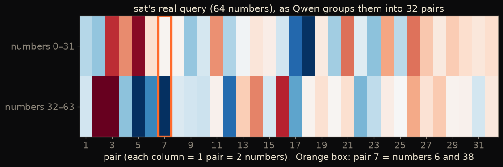
The real 64 numbers of sat's query (layer 0, head 5). Qwen's code pairs number i with number i + 32, so each column is one pair. (The RoFormer paper pairs neighbours instead, 0&1, 2&3…; same rotation, numbers stored in a different order.)
- "Pair 7" means the 7th of the 32 two-number groups inside one vector (numbers 6 and 38, counting from 0). It does not mean "the query and the key". The query has its own pair 7, the key has its own pair 7, and the score compares query pair 7 with key pair 7.
- Why the pictures show only 2 numbers: an x–y grid can draw exactly one pair. So each rotation picture below shows one of the 32 pairs (pair 7). All 32 pairs are turned at the same moment, and the full score adds all 32 up (shown further down).
Why pairs? Could we rotate all 64 numbers at once?
Beyond 2 dimensions, "rotate by one angle" doesn't exist on its own. In 2D, one angle turns the whole arrow. In 3D, every rotation has an axis that stays still: you're really turning inside one flat plane. From 4D up, you can turn in several separate planes at once, each with its own angle. 64 numbers have room for at most 32 separate planes (64 ÷ 2). So any rotation of 64 numbers is described by 32 planes and 32 angles. Turning just one plane changes only 2 of the 64 numbers (checked: exactly 2 changed).
Plain planes and tilted planes, in 3D
A plane here is any flat sheet through the centre. Turning "in a plane" means the point swings around inside that sheet; the direction at right angles to it (the axis) stays still.
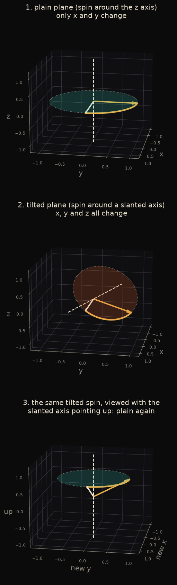
| picture | start | after a 90° turn |
|---|---|---|
| 1. plain plane (x, y, z) | (1.00, 0.00, 0.00) | (0.00, 1.00, 0.00) |
| 2. tilted plane (x, y, z) | (1.00, 0.00, 0.00) | (0.33, 0.91, -0.24) |
| 3. tilted, new viewpoint (new x, new y, up) | (0.82, 0.00, 0.58) | (-0.00, 0.82, 0.58) |
Exact rotations of the same point (1, 0, 0) by 90°. White arrow: start. Gold arrow and arc: after the turn. Dotted circle: the full path. Shaded disc: the plane the point turns in. Dashed line: the axis that stays still.
- Left, plain plane: spin around the vertical z axis. The point moves in a flat sheet lined up with x and y, so only x and y change; z stays the same. This is what RoPE does: pair 7 is the plane made of exactly two of the 64 slots (6 and 38), so only those two numbers change.
- Middle, tilted plane: spin around a slanted axis (pointing equally between x, y and z). The point still moves in one flat sheet with one angle, but the sheet is tilted, so x, y and z all change at once. In 64 dimensions, a tilted plane mixes many of the 64 slots, so turning it changes many numbers.
- Right, same tilted turn, new viewpoint: describe the same motion with the slanted axis as "up". Now it's a plain turn again: only the first two numbers change, and "up" stays the same. The tilt was never a different kind of rotation, only a different way of lining up the axes. Changing to that viewpoint is what the matrix S below does.
You can still build one big 64 × 64 rotation. Take a 64 × 64 "generator" matrix A of a special kind (skew-symmetric: flipping it over its diagonal gives −A) and use R(position) = exp(position × A), the matrix version of "cos and sin of an angle". I did this with a random A:
- all 4,096 entries of the matrix are non-zero: it mixes every number with every other;
- lengths are kept: 7.8593 before, 7.8593 after turning by 1,000 positions;
- only the gap survives: score at positions (7, 3) = 1.6485, at (507, 503) = 1.6485.
So it works, and has RoPE's key property.
But inside, it is 32 pair-turns. Taking A apart (its "real Schur form") gives R = S × (32 separate 2 × 2 turns) × Sᵀ, where S is a fixed tilt that just picks which 32 planes to turn in. Rebuilding R this way matches it to within 4e-15.
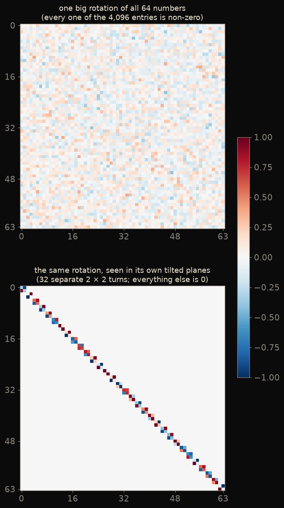
Top: the big rotation for position 60. Bottom: the same rotation viewed through the tilt S: just 32 little 2 × 2 blocks on the diagonal, like RoPE's own matrix.
Why it isn't done: the tilt adds nothing the model can't already learn. Queries and keys are made by learned weight matrices. A fixed tilt can be folded into those weights. I checked: plain pair-by-pair RoPE on tilt-adjusted vectors gives the same score, 1.6485 (difference 7e-15). The LieRE paper (Ostmeier et al., 2024), which tried exactly this "learn a full rotation" idea, proves the same in its Appendix A: for positions along a line, as in text, it "reduces to RoPE with learnable phases". "Rethinking RoPE" (Liu et al., 2025) shows more generally that any valid RoPE is a set of turning planes, and anything beyond the block-by-block form is "a change of basis".
What the model learns
The model doesn't receive a query with a fixed meaning in each slot. It makes the query: query = Wq × the token's numbers, where Wq is a learned matrix (and Wk for the key). So Wq decides what information lands in slots 6 and 38, that is, what goes into pair 7.
- RoPE fixes the planes (slots 0&32, 1&33, …) and the speeds (pair 1 fastest … pair 32 slowest).
- The model learns Wq and Wk so that each kind of information lands in a pair with a useful speed: things that should only match nearby words in fast pairs, things that should match at any distance in slow pairs, which barely turn.
- Tilted planes would just need the information sent into tilted directions. Making tilted mixtures is exactly what a matrix like Wq does, so the tilt and Wq merge into one learned matrix. That's the folding checked above.
That's what we see in the real model: in Qwen, the slowest pairs carry query numbers about 3.4× bigger than the fastest (chapter 10), so Wq puts a lot of information into the barely-turning pairs, the same picture DeepMind found in Gemma.
And pairs are far cheaper: a dense 64 × 64 rotation costs 4,096 multiplications per vector (plus a matrix exponential for every position); pair-by-pair RoPE costs 128, using cos and sin from a simple formula. That's 32× less, in every head of every layer, for every token.
The RoPE idea (Su et al., 2021)
- Query of the word at position m: turn every pair by m steps of that pair's own speed (pair i turns by m × θi).
- Key of the word at position n: turn every pair by n steps of its own speed (n × θi).
Now use the one fact from chapter 2, pair by pair: the dot product of two pairs depends only on their lengths and the angle between them. Rotation keeps lengths. And if the query's pair turns m steps and the key's pair n steps (same speed, it's the same pair number), the angle between them changes by m − n steps. The positions cancel; only the gap is left.
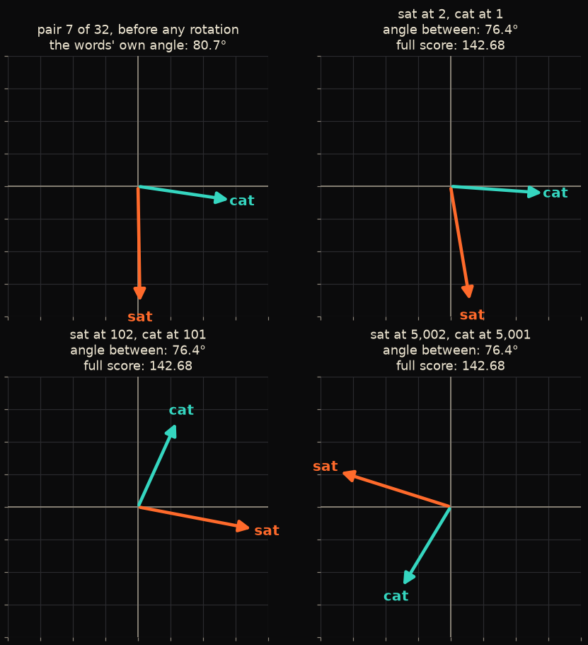
Real numbers: pair 7 of 32 (numbers 6 and 38) of the actual query for "sat" and of the key for "cat", from Qwen's first layer, head 5. The arrows point in completely different directions at each position, but the angle between them is identical. The full score uses all 64 numbers and is the same 142.68 every time.
The RoPE score as a formula
For one pair, with the query at position m and the key at position n:
pair score = |q| × |k| × cos( own angle + (m − n) × step )Pair 7 (of 32) of sat's real query and of cat's real key, sat at 2, cat at 1:
|q| = 10.881 |k| = 8.720
own angle = -80.7° step = 4.30° m − n = 1
pair score = 10.881 × 8.720 × cos(-80.7° + 1 × 4.30°)
= 22.30The full score adds up all 32 pairs, each with its own lengths, own angle and own step, and attention then divides by √64 = 8 (the standard scaling in every Transformer):
score = ( pair 1 + pair 2 + … + pair 32 ) ÷ 8
= 1141.44 ÷ 8
= 142.68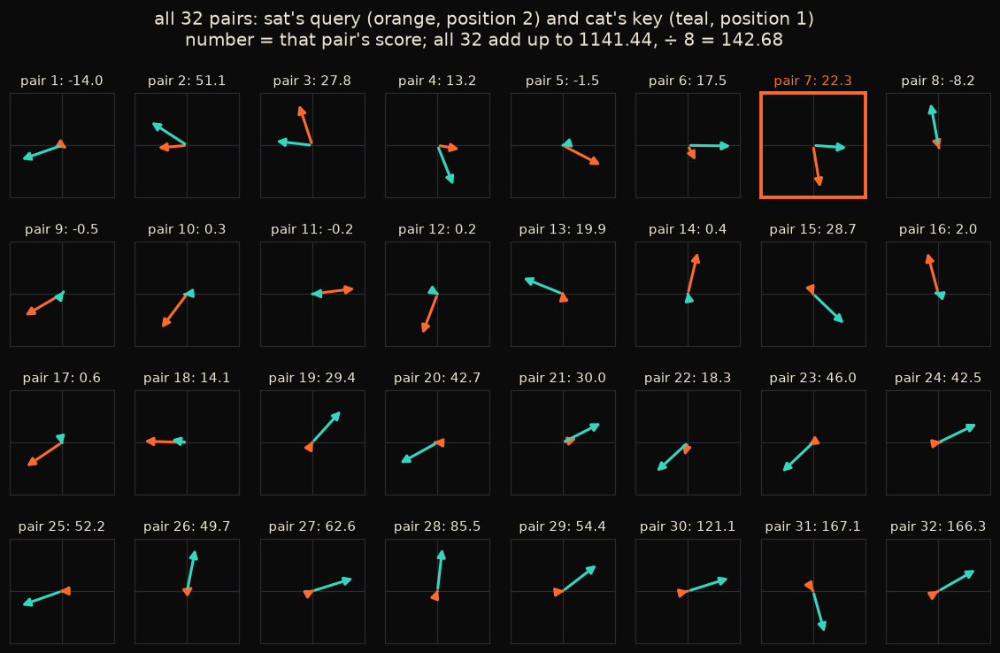
Every pair of the real vectors at once. Each little grid is one pair (arrows scaled to fit each grid; real lengths are in the table). Each pair has its own angle and its own score; pair 7 (orange frame) is the one in the pictures above.
All 32 pairs as a table (click to open)
| pair | numbers | step per position | |q| | |k| | pair score |
|---|---|---|---|---|---|
| 1 | 0 & 32 | 57.3° | 2.05 | 10.91 | -13.99 |
| 2 | 1 & 33 | 37.2° | 6.75 | 9.59 | 51.12 |
| 3 | 2 & 34 | 24.2° | 8.77 | 7.55 | 27.76 |
| 4 | 3 & 35 | 15.7° | 3.73 | 6.84 | 13.25 |
| 5 | 4 & 36 | 10.2° | 8.12 | 0.26 | -1.51 |
| 6 | 5 & 37 | 6.62° | 4.02 | 9.35 | 17.52 |
| 7 | 6 & 38 | 4.3° | 10.88 | 8.72 | 22.30 |
| 8 | 7 & 39 | 2.79° | 0.86 | 9.52 | -8.16 |
| 9 | 8 & 40 | 1.81° | 2.58 | 0.20 | -0.48 |
| 10 | 9 & 41 | 1.18° | 1.69 | 0.24 | 0.27 |
| 11 | 10 & 42 | 0.764° | 2.77 | 0.06 | -0.17 |
| 12 | 11 & 43 | 0.496° | 4.96 | 0.17 | 0.16 |
| 13 | 12 & 44 | 0.322° | 1.51 | 26.03 | 19.89 |
| 14 | 13 & 45 | 0.209° | 3.07 | 0.13 | 0.36 |
| 15 | 14 & 46 | 0.136° | 1.10 | 28.83 | 28.74 |
| 16 | 15 & 47 | 0.0882° | 4.77 | 0.74 | 1.96 |
| 17 | 16 & 48 | 0.0573° | 5.67 | 0.30 | 0.61 |
| 18 | 17 & 49 | 0.0372° | 5.92 | 2.42 | 14.14 |
| 19 | 18 & 50 | 0.0242° | 1.06 | 28.24 | 29.39 |
| 20 | 19 & 51 | 0.0157° | 2.08 | 24.29 | 42.70 |
| 21 | 20 & 52 | 0.0102° | 3.42 | 8.94 | 30.03 |
| 22 | 21 & 53 | 0.00662° | 2.81 | 7.75 | 18.29 |
| 23 | 22 & 54 | 0.0043° | 2.89 | 16.26 | 46.04 |
| 24 | 23 & 55 | 0.00279° | 2.40 | 18.31 | 42.46 |
| 25 | 24 & 56 | 0.00181° | 1.64 | 33.50 | 52.15 |
| 26 | 25 & 57 | 0.00118° | 3.97 | 17.37 | 49.65 |
| 27 | 26 & 58 | 0.000764° | 1.83 | 34.75 | 62.58 |
| 28 | 27 & 59 | 0.000496° | 1.68 | 52.51 | 85.54 |
| 29 | 28 & 60 | 0.000322° | 1.52 | 41.13 | 54.43 |
| 30 | 29 & 61 | 0.000209° | 1.03 | 117.53 | 121.07 |
| 31 | 30 & 62 | 0.000136° | 1.29 | 134.90 | 167.08 |
| 32 | 31 & 63 | 8.82e-05° | 1.19 | 139.38 | 166.27 |
| sum of all 32 | 1141.44 | ||||
Computed from the real vectors pair by pair; it matches the 142.68 from Qwen's own code. Notice what's missing from the formula: m and n never appear alone, only m − n.
angle between = the words' own angle + (m − n) × step
Real numbers for this pair: the words' own angle is -80.7° (the minus sign only says which arrow is ahead), the step is 4.30° per position and the gap is 1, so the angle becomes -80.7° + 1 × 4.30° = -76.4°: the arrows are 76.4° apart. At 102 and 101, or 5,002 and 5,001, the gap is still 1, so it's still 76.4°.
The words' own angle comes from what the words are; the gap × step comes from how far apart they are. Both end up in one score: length × length × cos(total angle). Each of the 32 pairs does this with its own angle and its own step, and the full score adds them up.
Why not just use the gap directly?
If only the gap matters, why rotate at all? Why not give the model m − n? Because no token knows the gap. "sat" only knows it's at 2; "cat" only knows it's at 1. The gap belongs to the pair. And attention works in two steps:
- Step 1, per token: each token makes its own query and key. Here a token knows only its own position.
- Step 2, all pairs at once: one big matrix multiplication scores every query against every key. 1,000 tokens means 1,000 × 1,000 = a million pairs.
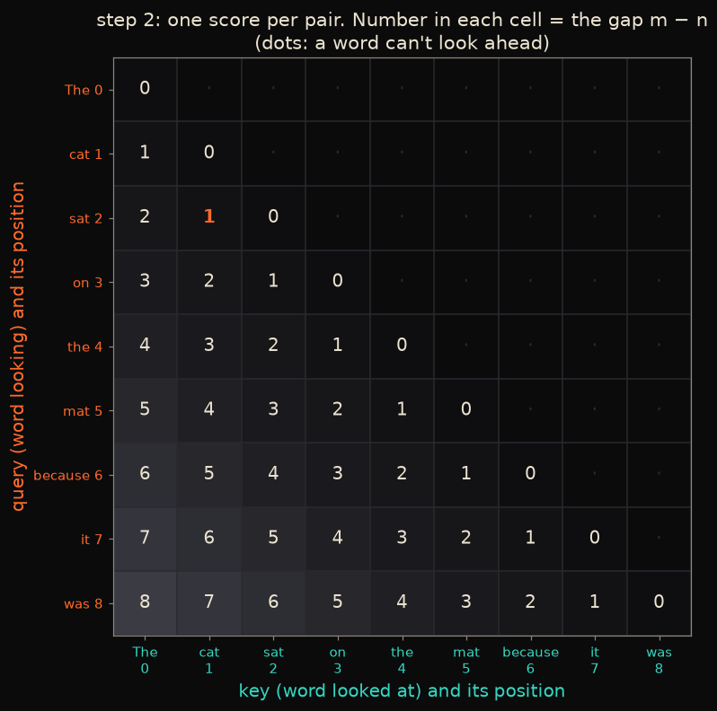
Our 9-token sentence: every cell is one score computed in step 2. The number is that pair's gap. sat → cat (gap 1) is highlighted.
Using the gap directly means reaching into step 2 and adding something to every cell. That's exactly what T5 and ALiBi do (chapter 7): an extra term on the score matrix.
RoPE works only in step 1. Each token turns its own query and key by its own position. Step 2 stays a plain dot product, and the gap comes out of it by itself, as the angle formula above shows.
- Step 2 is untouched: the attention computation itself doesn't change.
- Stored keys stay valid: while the model writes, it keeps every past key (the KV cache). With RoPE a key is turned once, by its own position, and never needs updating, because its position never changes.
- It works where there's no score matrix: RoFormer points out that some fast "linear attention" variants never build the pair-by-pair matrix, so there is nowhere to add a gap term. Rotation still works, because it only touches each token's own vector.
Why rotation, of all things? RoFormer sets it up as a puzzle: change each query and key using only its own position, so that their dot product depends only on the words and the gap. Rotation is the solution they derive. It also never changes a length, so position doesn't distort the content.
Try it yourself with the same real pair:
9. Many speeds
One speed has the same problem as one sine wave. Qwen's fastest pair turns 1 radian per token, so after 44 tokens it is back within about 1° of its start:
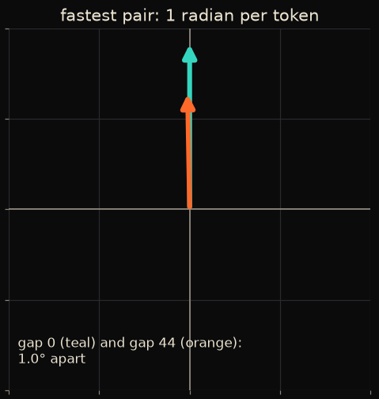
So RoPE uses the 2017 trick: each head's 64 numbers are split into 32 pairs, and each pair turns at its own speed from the same kind of formula, base^(−2i/64) radians per token.
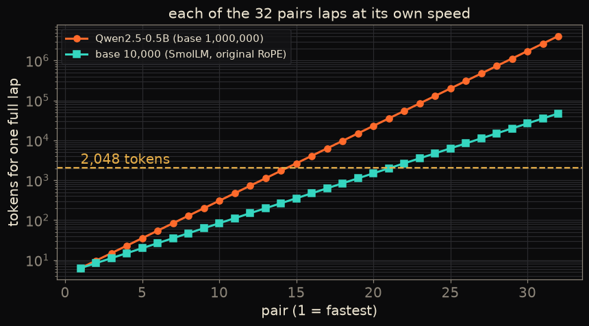
Qwen's base is 1,000,000: the fastest pair laps every 6.3 tokens, the slowest every ~4.08 million tokens. Fast pairs tell neighbours apart; slow pairs barely move between neighbours but keep counting over thousands of tokens without wrapping.
Why not the same angle for every pair?
If one position must turn the vector, why not turn all 32 pairs by the same angle? That is a valid rotation, and it would still keep "only the gap matters". The problem is what it can't tell apart. Real sat/cat vectors from Qwen, scored at different gaps:
| gap | real RoPE (32 speeds) | all pairs fast (1 rad/token) | all pairs slowest |
|---|---|---|---|
| 0 | 142.96 | 142.96 | 142.96 |
| 1 | 142.68 | 109.11 | 142.96 |
| 2 | 140.64 | -25.06 | 142.96 |
| 44 | 117.42 | 143.61 | 142.97 |
| 1,000 | 117.55 | 111.72 | 143.02 |
| 4,000 | 84.22 | -130.24 | 143.19 |
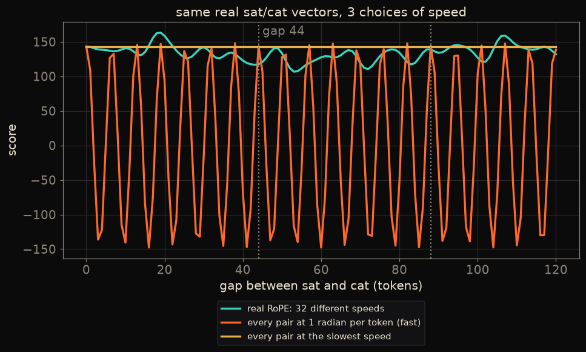
- All pairs fast: the whole vector comes back almost to its start every 2π ≈ 6.28 tokens. At gap 44 every one of the 32 pairs is within 1.0° of gap 0, so a word 44 tokens back scores like the same position (143.61 vs 142.96), and again at 88, 145…
- All pairs slow: almost nothing turns; gaps 0, 1, 2 and 44 all score 142.96. Neighbours can't be told apart.
- Real RoPE: fast pairs separate neighbours, slow pairs keep counting. Checking every gap up to 32,768 (Qwen's context length), the set of 32 angles never comes back to its start: the closest any gap gets is still 57.3° off in at least one pair. Every gap has its own fingerprint, like a clock whose three hands never show the same pattern twice in a day.
10. Why it won
- LLaMA (2023): "We remove the absolute positional embeddings, and instead, add rotary positional embeddings (RoPE)… at each layer of the network."
- PaLM (2022): "RoPE embeddings have been shown to have better performance on long sequence lengths."
- GPT-NeoX-20B (2022): rotary instead of GPT's learned position embeddings.
What you get: relative distance built into the score; no table and no learned position weights, so nothing runs out; the word's numbers never mixed with an address; attention stays a plain dot product.
A common myth is that RoPE works because attention fades with distance. Barbero et al. (Oxford and Google DeepMind, 2024) looked inside Gemma 7B and argued that's unlikely to be the core reason. They found the model uses the fastest pairs to build sharp positional patterns (for example a "previous-token" head) and seems to use the slowest pairs, which barely turn, to carry meaning.
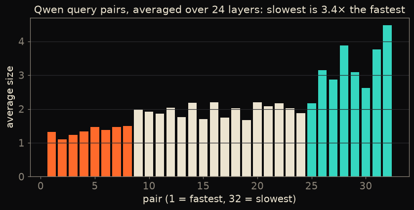
My check on Qwen: the slowest pairs carry the biggest numbers. The same picture.
11. Past the training length
First: why can a model run on any length at all?
Because no weight in the model has a size tied to the number of tokens. These are the real shapes in Qwen2.5-0.5B's file:
| weight | shape |
|---|---|
| token embeddings | 151,936 × 896 |
| query projection | 896 × 896 |
| key projection | 128 × 896 |
| value projection | 128 × 896 |
| attention output | 896 × 896 |
| MLP up-projection | 4,864 × 896 |
Every size is the vocabulary (151,936), the model's width (896), or an internal width. I also searched every weight in the file for a dimension of 32,768 (Qwen's context length): there is none. The weights are applied to each token on its own: 9 tokens means 9 multiplications by the same 896 × 896 matrix, 100,000 tokens means 100,000.
The things that do grow with length are built while the model runs, not stored: the N × N attention score grid (chapter 8) and the KV cache (one key and value per token per layer). So the only kinds of length limit are:
- A learned position table. GPT-2's is 1,024 × 768, the one weight with a length dimension. Position 1,024 doesn't exist, so it crashes.
- What training covered. RoPE and ALiBi compute position from a formula, so any position works mechanically. The question is whether the results are any good (below).
- Memory and compute on the machine running it.
Then why do context windows and output limits exist?
Quality. A model is only reliable up to the lengths it was trained and tested on. Llama 3's paper grew the context in 6 stages, from 8K to 128K tokens, checking at each stage that the model had adapted (including "needle in a haystack" tests) before moving on. The advertised context window is the length that was trained and checked, not a matrix size.
Memory. The KV cache stores a key and a value for every token in every layer. Size per token = 2 × key/value heads × head size × layers, at 2 bytes per number:
| model | numbers per token | per token | at full context |
|---|---|---|---|
| Qwen2.5-0.5B | 2 × 2 × 64 × 24 = 6,144 | 12 KB | 32,768: 384 MB |
| Llama 3 70B | 2 × 8 × 128 × 80 = 163,840 | 320 KB | 128K: 40 GB |
Llama 3 70B's sizes are from its paper (80 layers, width 8,192, 64 heads, 8 key/value heads, so a head size of 128); Qwen's from its config. GB here means 1,024³ bytes. That's per conversation, on top of the model's own weights; a server running many conversations at once runs out of GPU memory quickly.
Compute and time. Every token is compared with every earlier one, so doubling the length roughly quadruples the attention work.
Output limits are separate. Output is produced one token at a time, and each token is a full pass through the model that reads the whole KV cache so far, so 4,000 output tokens means 4,000 passes in a row. In most APIs input + output must also fit in the context window together, and models are trained mostly on responses up to some length. (Providers such as Anthropic and OpenAI publish their limits, but not every reason behind each number; these are the general engineering reasons.)
What happens past the training length
SmolLM-135M uses RoPE with base 10,000 and was trained on 2,048-token texts. I fed it 8,192 tokens of Pride and Prejudice and measured the loss at every position (red line below): fine up to 2,048, then it explodes. Perplexity 16.6 on the first part, 716.6 after.
But RoPE only sees gaps, so why does length matter? Because of the slow pairs:
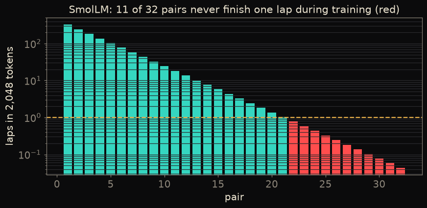
11 of SmolLM's 32 pairs never complete one lap in 2,048 tokens, so in training they only ever saw part of their circle. Past 2,048 they reach angles the model has never seen (the YaRN paper makes this argument). The Position Interpolation paper showed that such extrapolation can produce catastrophically large attention scores.
12. Stretching the clock
Because positions are just angles, they can be squeezed. That's impossible with a learned table: you can't squeeze rows that don't exist.
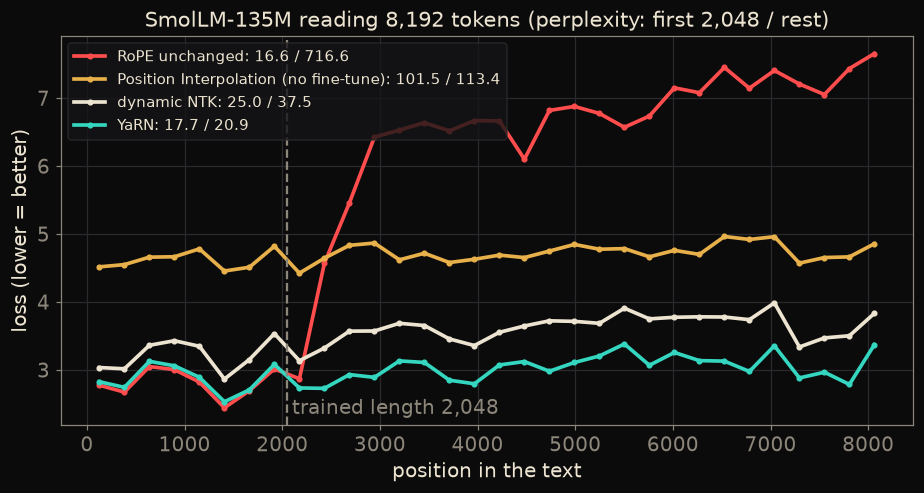
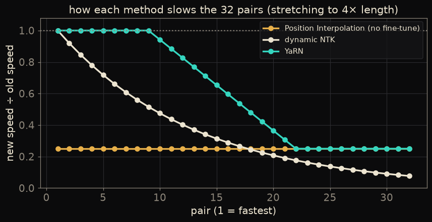
Second graph: the actual new speed of each pair under each method, from the same formulas the transformers library uses, for a 4× stretch.
| Method | What it does | My run (first 2,048 / rest) |
|---|---|---|
| RoPE unchanged | nothing | 16.6 / 716.6 |
| Position Interpolation (Meta, 2023) | divide every position by 4: all pairs slowed equally | 101.5 / 113.4 |
| Dynamic NTK | raise the base for the current length: slow pairs slowed a lot, fast ones barely | 25.0 / 37.5 |
| YaRN (2023) | leave fast pairs alone, squeeze only slow ones, blend between | 17.7 / 20.9 |
Bigger bases became the norm: Code Llama raised its base from 10,000 to 1,000,000 while training on longer code; Llama 3 uses 500,000 and reached a 128K-token context in its final training stage; the Qwen I tested uses 1,000,000.
13. What's next, and the recap
Images: M-RoPE (Qwen2-VL)
An image is a grid, not a line. Qwen2-VL splits the rotary pairs into 3 groups that turn with time, height and width. For text, all 3 get the same number, which makes it ordinary RoPE. Image patches share one time number and get height and width from their place in the grid; the next text continues after the largest number used. Position numbers following the paper's rule:
| token | time | height | width |
|---|---|---|---|
| Describe | 0 | 0 | 0 |
| this | 1 | 1 | 1 |
| image patch r1c1 | 2 | 2 | 2 |
| image patch r1c2 | 2 | 2 | 3 |
| image patch r1c3 | 2 | 2 | 4 |
| image patch r2c1 | 2 | 3 | 2 |
| image patch r2c2 | 2 | 3 | 3 |
| image patch r2c3 | 2 | 3 | 4 |
| : | 5 | 5 | 5 |
| a | 6 | 6 | 6 |
Some layers with no position at all: Llama 4
Meta's Llama 4 uses "interleaved attention layers without positional embeddings", with RoPE in most layers, and calls it iRoPE, aimed at very long context.
Recap
- Attention scores tokens with dot products; dot products can't see order.
- Adding positions (sine waves, learned tables) works, but mixes address into meaning and is absolute.
- Relative biases (Shaw, T5, ALiBi) add an extra term to the scores.
- RoPE rotates the query and key by their positions. Lengths don't change, so the score sees only the angle, and the angle sees only the gap.
- Many speeds let it separate neighbours and count far.
- Its weak spot is length beyond training (slow pairs), but because positions are angles, they can be stretched (PI, NTK, YaRN, bigger bases).
Sources
- Vaswani et al. 2017
- Shaw et al. 2018
- Raffel et al. 2019 (T5)
- Ke et al. 2020 (via RoFormer)
- Su et al. 2021 (RoFormer)
- Press et al. 2021 (ALiBi)
- Haviv et al. 2022
- Chowdhery et al. 2022 (PaLM)
- Black et al. 2022 (GPT-NeoX-20B)
- BigScience 2022 (BLOOM)
- Touvron et al. 2023 (LLaMA)
- Chen et al. 2023 (Position Interpolation)
- Rozière et al. 2023 (Code Llama)
- Peng et al. 2023 (YaRN)
- Llama Team 2024 (Llama 3)
- Wang et al. 2024 (Qwen2-VL)
- Barbero et al. 2024
- Meta 2025 (Llama 4 blog)
- Zhu et al. 2023 (PoSE)
- Ruoss et al. 2023 (Randomized Positional Encodings)
- Ostmeier et al. 2024 (LieRE)
- Liu et al. 2025 (Rethinking RoPE). Model runs: Qwen2.5-0.5B, GPT-2 small, SmolLM-135M, fp32 on CPU
Watch the full video
22 minutes, 13 chapters, no maths assumed: the same story as this article, animated.